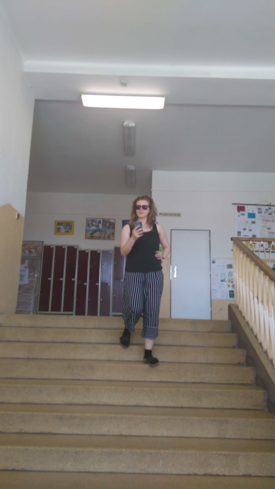
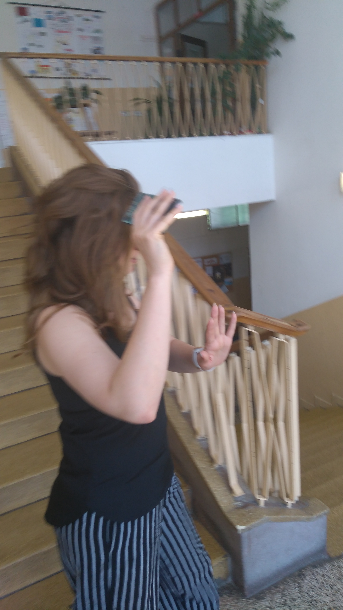

Charles and Camilla ILLEGITIMATE CHILD?!
Speculations arose after a visit of Prince Charles and Camilla to the tropical island of St. Croix, where they were accompanied by a strange woman.
"She most definitely looks like part of the Windsor bloodline," stated a Royal Family expert, Mikos Wazowski. "I have just never seen her."
This woman, that was enjoying herself alongside the royal couple, is speculated to be Jaroslava Argajova, from Bratislava, Slovakia.
Mr. Wazowski reckons that Jaroslava is an illegitimate child of Charles and Camilla, being born during the marriage of late Princess Diana and Prince Charles. She was probably taken abroad in her first years, where she was raised under false identity. This whole fiasco, just to avoid a worldwide scandal.
She works currently as a teacher, however, if speculations are confirmed, then she will not have to work ever in her life! Her true name is probably Lillien Rosehip Shand, maintaining the flower-name tradition of her mother.
Being born during the marriage of Prince Charles and Princess Diana, makes her an illegitimate child, therefore disqualifying her succession to the throne.
Camilla is supposed to have an interview with reporters from TREA NEWS, and knowing Camilla, she will tell us the truth.
Until then, we will be keeping a close eye on "Jaroslava".